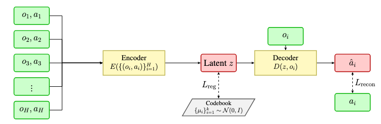
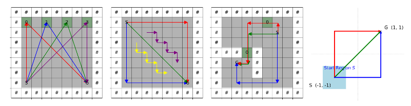

Policy-Based Trajectory Clustering
Xinqi Wang, Hao Hu, Simon S. Du
🌌 What is Policy Clustering and Why Does It Matter?
Policy clustering provides a principled framework to disentangle heterogeneous behaviors in offline RL datasets. Instead of treating the dataset as a monolithic block, we recognize the multiple policies behind the trajectories and aim to partition them accordingly. This clustering can improve generalization, facilitate imitation learning, and support downstream analyses. It also aligns with the intuition that data collected from different decision makers may follow qualitatively different strategies.
- Reduces interference from suboptimal policies, improving stability.
- Enhances interpretability of policy behaviors for debugging and refinement.
- Supports semi-supervised fine-tuning on limited labeled trajectories.
🔹 Two Methods Overview
PG-Kmeans
We adopt an EM-style algorithm that alternates between policy training and assignment. In the E-step, trajectories are clustered using action likelihoods under different policies. In the M-step, each cluster's policy is refined by behavior cloning. The algorithm gradually sharpens the cluster-policy alignment.
CAAE
Inspired by VQ-VAE, this method learns latent representations of trajectories and attracts them to Gaussian centers for clustering.

📊 Environment Overview
We validate our methods in GridWorld environments with multiple distinct strategies, each representing a different policy preference:

We designed multiple environments, each with several expert policies (represented by different colored arrows). Each environment contains significant random noise. An ideal policy clustering algorithm should cluster based on the generating policy, rather than the randomness of transitions.